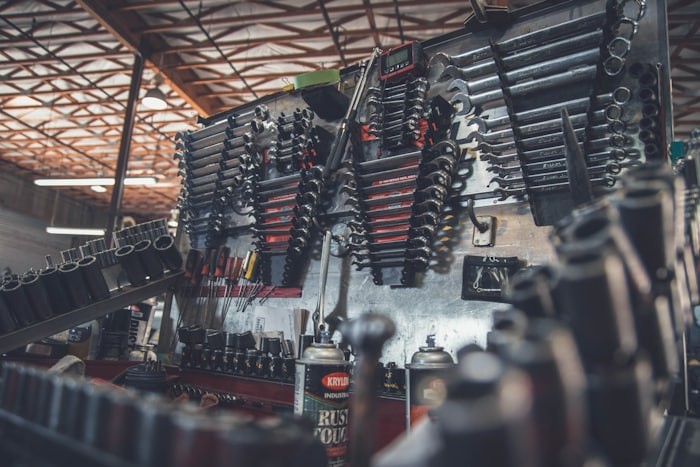
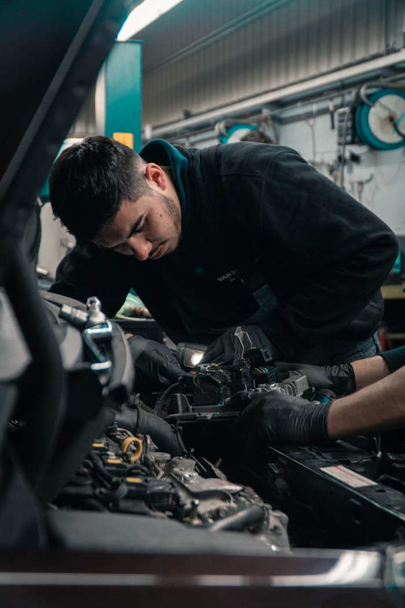
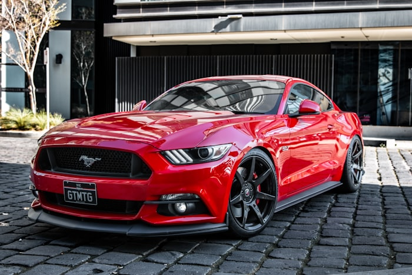
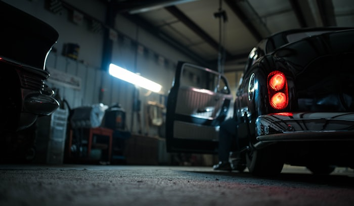

Conoce a detalle cómo cuidamos tu vehículo

Mantenemos tu vehículo en óptimas condiciones con revisiones programadas (preventivo) y reparamos las fallas que ya se presentaron (correctivo). Prevenir siempre es más económico que reparar. Consulta nuestra promoción desde S/ 550.

Diagnóstico y reparación integral del motor, desde fallas menores hasta reparaciones mayores, con repuestos de calidad y garantía de trabajo.

Tu seguridad depende de los frenos. Revisamos y reemplazamos los componentes desgastados para que tu vehículo frene firme y seguro.
Mejoramos el confort, la estabilidad y el manejo de tu vehículo. Diagnosticamos ruidos, vibraciones y desgaste irregular de llantas.
Reparación y mantenimiento del sistema de transmisión manual y automática, y del embrague, para una conducción suave y sin fallas.
Evitamos el sobrecalentamiento del motor manteniendo el sistema de refrigeración en perfecto estado.
Optimizamos el rendimiento del motor y reducimos el consumo de combustible con afinamiento basado en diagnóstico electrónico.

Diagnosticamos y reparamos fallas eléctricas y de electrónica automotriz con multitester y equipos especializados.
Venta e instalación de baterías nuevas con prueba previa del sistema de carga para garantizar el arranque confiable de tu vehículo.
Reparamos y reconstruimos alternadores y motores de arranque para asegurar el correcto funcionamiento del sistema de carga y encendido.
El cambio oportuno de correas evita daños graves al motor. Reemplazamos correas de distribución y accesorios junto con sus tensores.

Detectamos y reparamos fugas para evitar pérdidas de aceite y refrigerante que pueden dañar el motor.
Reemplazamos retenes y empaquetaduras desgastadas para eliminar fugas y mantener la estanqueidad del motor y la transmisión.
Con escáner electrónico leemos los códigos de la computadora del vehículo para identificar el problema con precisión, y los borramos tras la reparación.

Mantén tu vehículo fresco y con aire limpio. Revisamos fugas, recargamos el gas refrigerante y reparamos el sistema completo de climatización.
¿Vas a comprar un auto usado? Lo revisamos a fondo antes de tu compra para que decidas con seguridad y evites sorpresas costosas.